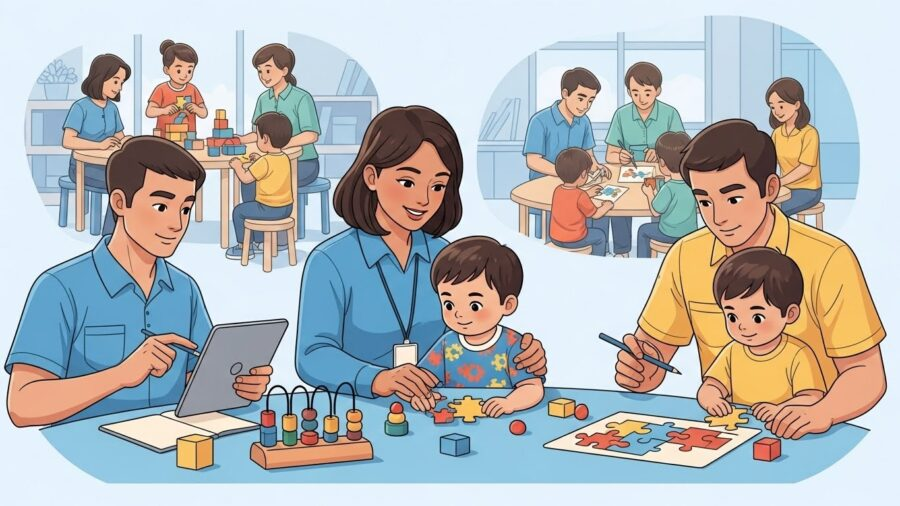
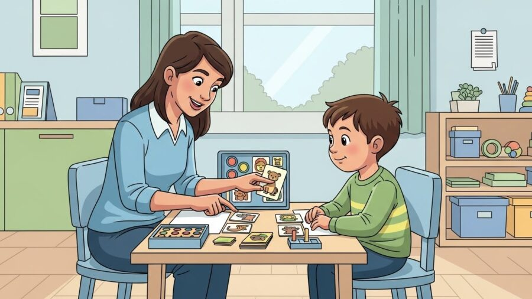
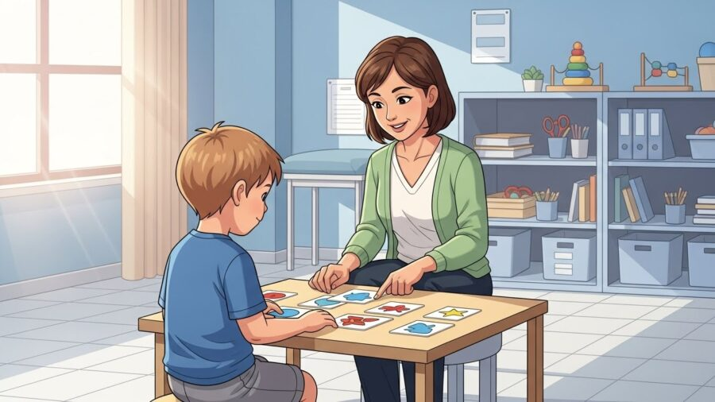
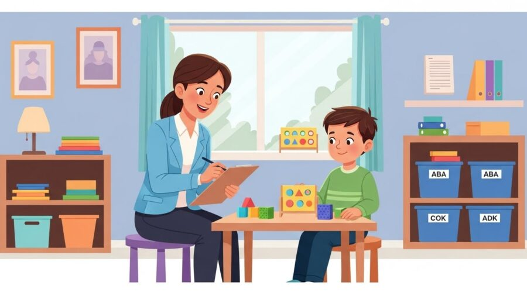

Terapias e Abordagens
Terapias e Abordagens
8 de janeiro de 2026

A compreensão do Transtorno do Espectro Autista (TEA) evoluiu significativamente nas últimas décadas. O que antes era visto de forma limitada hoje é compreendido como uma condição do neurodesenvolvimento marcada por diferentes formas de perceber, interagir e responder ao mundo. Nesse contexto, a Ciência ABA, Análise do Comportamento Aplicada, se consolidou como uma das abordagens mais estudadas, reconhecidas e recomendadas internacionalmente para o desenvolvimento de crianças com TEA.

Mais do que um conjunto de técnicas, a ABA é uma ciência comportamental, com bases sólidas na psicologia experimental, na análise funcional do comportamento e na aplicação sistemática de estratégias baseadas em evidências. Quando aplicada de forma ética, individualizada e supervisionada, ela se torna uma poderosa aliada no desenvolvimento da comunicação, da autonomia, das habilidades sociais e da qualidade de vida da criança e de sua família.
Na HD 360 Moinhos, localizada no bairro Moinhos de Vento, em Porto Alegre/RS, a ciência ABA é aplicada com rigor técnico, sensibilidade clínica e profundo respeito à singularidade de cada criança. Este artigo foi desenvolvido para esclarecer, aprofundar e desmistificar a ABA, explicando seus fundamentos científicos, sua aplicação prática e o impacto real que pode gerar no desenvolvimento infantil.
A Análise do Comportamento Aplicada (Applied Behavior Analysis) é um campo científico que estuda como o comportamento humano é influenciado pelo ambiente e como pode ser ensinado, fortalecido ou modificado de maneira ética e funcional.

A ABA se baseia em princípios comportamentais amplamente estudados, como:
O diferencial da ciência ABA é quetoda intervenção é baseada em dados, observações diretas e análise contínua de resultados. Nada é feito por achismo. Cada decisão clínica é sustentada por evidências.

Uma intervenção é considerada baseada em evidências científicas quando:
A ABA atende a todos esses critérios. Há décadas, estudos demonstram seus efeitos positivos no desenvolvimento de crianças com TEA, especialmente quando iniciada precocemente e aplicada de forma intensiva e estruturada.
Na prática clínica do HD 360 Moinhos, isso significa que cada criança tem um plano terapêutico único, construído a partir de avaliações criteriosas e acompanhado por indicadores claros de progresso.

Nenhuma intervenção em ABA começa sem uma avaliação detalhada. Essa etapa é fundamental para compreender:
A partir dessa avaliação, a equipe define objetivos terapêuticos individualizados, sempre priorizando habilidades funcionais que façam sentido para a vida real da criança.
Um dos maiores equívocos sobre a ABA é imaginar que ela funciona como um “pacote pronto”. Pelo contrário: a personalização é um dos pilares da ciência ABA.
No HD 360 Moinhos, dois planos terapêuticos nunca são iguais. Mesmo crianças com o mesmo diagnóstico apresentam necessidades, ritmos e potencialidades completamente diferentes. Por isso, os programas são constantemente ajustados, respeitando:
O reforço positivo é um dos conceitos mais conhecidos, e também mais mal compreendidos, da ABA. Ele não se resume a recompensas materiais. Reforçar significa aumentar a probabilidade de um comportamento acontecer novamente, utilizando aquilo que é significativo para a criança.
Pode ser:
Quando bem aplicado, o reforço fortalece comportamentos adequados, promove engajamento e torna o aprendizado mais prazeroso.
A comunicação é uma das áreas mais impactadas no TEA. A ciência ABA trabalha o desenvolvimento comunicativo de forma ampla, respeitando o nível atual da criança, seja ela:
O foco não é apenas “falar”, mas comunicar-se de forma funcional, expressando desejos, necessidades, emoções e escolhas.
A ABA também atua fortemente no desenvolvimento de habilidades sociais, como:
Essas habilidades são ensinadas de forma gradual, estruturada e contextualizada, permitindo que a criança generalize os aprendizados para diferentes ambientes.
Um dos grandes diferenciais da ciência ABA é a análise funcional do comportamento. Em vez de rotular comportamentos como “problema”, a ABA busca entender:
Somente após essa compreensão é que estratégias adequadas são aplicadas, sempre priorizando alternativas mais funcionais e seguras.
Nada na ABA é feito sem acompanhamento. Dados são coletados diariamente para:
No HD 360 Moinhos, essa análise contínua garante transparência, segurança clínica e evolução consistente.
A ciência ABA reconhece que o desenvolvimento não acontece apenas na clínica. Por isso, o envolvimento familiar é indispensável.
A equipe orienta pais e responsáveis para que:
Essa parceria fortalece os resultados e promove um ambiente mais equilibrado para toda a família.
A ABA moderna é ética, respeitosa e centrada na criança. Práticas punitivas ou descontextualizadas não fazem parte de uma intervenção responsável.
No HD 360 Moinhos, a ciência caminha junto com o acolhimento, o respeito às diferenças e a escuta ativa das famílias.
O ambiente influencia diretamente o comportamento. Por isso, a clínica foi planejada para ser:
Cada detalhe contribui para o aprendizado e o bem-estar da criança.
O objetivo final da ciência ABA não é apenas ensinar habilidades isoladas, mas promover autonomia e qualidade de vida.
Isso inclui:
Cada pequena conquista é um passo em direção a um futuro mais funcional e digno.
A escolha da clínica faz toda a diferença nos resultados. Uma intervenção eficaz exige:
A HD 360 Moinhos se destaca por unir conhecimento científico, experiência clínica e um olhar humano sobre o desenvolvimento infantil.
Aqui, cada criança é vista além do diagnóstico. O foco está no potencial, no progresso possível e na construção de caminhos reais para o desenvolvimento.
A Ciência ABA é, hoje, uma das ferramentas mais sólidas e eficazes para apoiar o desenvolvimento de crianças com TEA. Quando aplicada com ética, conhecimento e sensibilidade, ela transforma não apenas comportamentos, mas histórias, rotinas e perspectivas de futuro.
Se você busca uma clínica de autismo em Porto Alegre, com atuação baseada em evidências científicas, acolhimento familiar e compromisso real com o desenvolvimento infantil, a HD 360 Moinhos está preparada para caminhar com você.